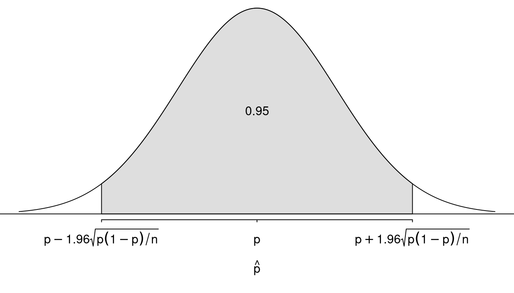
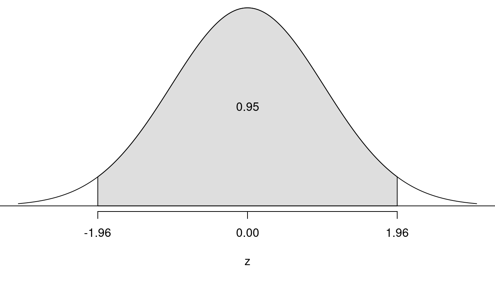
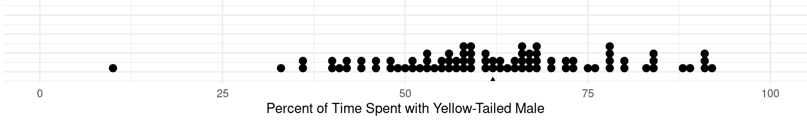

You can also download a PDF copy of this lecture.
A statistically significant result is one that is decidedly not due to “ordinary variation” in the data (i.e., not due to chance or not a coincidence). Statistical tests (aka significance tests or statistical hypothesis tests or hypothesis tests) are how we decide whether or not an observed result is statistically significant.
| \(x\) | \(P(x)\) |
|---|---|
| Heads | \(p\) |
| Tails | \(1-p\) |
The value of \(p\) implies something about the coin.
Assume we do not know the value of \(p\). We flip the coin 30 times to produce a sample of \(n\) = 30 observations. It comes up heads 20 times, so \(\hat{p}\) = 20/30 = 2/3 \(\approx\) 0.67. What might we decide about \(p\)?
How do we decide?
| \(x\) | \(P(x)\) |
|---|---|
| Correct | \(p\) |
| Incorrect | \(1-p\) |
The value of \(p\) implies something about Milena’s reading ability.
We do not know the value of \(p\). Milena played Pounce 50 times to produce a sample of \(n\) = 50 observations. She selected the correct word 25 times, so \(\hat{p}\) = 25/50 = 0.5. What would we decide about \(p\)?
What do we decide?
What do we know about the sampling distribution of \(\hat{p}\)?
This is the sampling distribution of \(\hat{p}\).  It is convenient to convert \(\hat{p}\) into a \(z\)-score using the formula \[ z = \frac{\hat{p}-p}{\sqrt{p(1-p)/n}}. \]
This is the sampling distribution of \(z\).  But we do not know the value of \(p\)!
Null Hypothesis \((H_0)\): Usually the hypothesis of “no effect” (e.g., nothing is “happening”). In practice the null hypothesis is often that the parameter equals a specific value (although we will consider the case when it may be a range of values when we discuss composite null hypotheses).
Alternative Hypothesis \((H_a)\): Usually the hypothesis of an “effect” (e.g., something is “happening”). In practice the alternative hypothesis is usually that the parameter is in a range of values.
What would the null and alternative hypotheses be for the examples above?
A test statistic measures the discrepancy between the point estimate of the parameter and the hypothesized value of the parameter. A test statistic is computed under the assumption that the null hypothesis is true.
Example: The \(z\)-score \[ z = \frac{\hat{p}-p}{\sqrt{p(1-p)/n}} \] is a test statistic. What would be the value of the test statistic for the examples above?
Modus Tollens: If A then B. Not B. Therefore not A.
Example: If someone is a Hobbit (A), then their feet will be hairy (B). Your feet are not hairy (not B). Therefore you are not a Hobbit (not A).
Example: If it rains today (A), then the ground will be wet (B). The ground is not wet (not B). Therefore it did not rain today (not A).
“Probabilistic” Modus Tollens: If \(H_0\) is true (A), then the test statistic is likely to be a “typical” value (B). The test statistics is not a “typical” value (not B). Therefore \(H_0\) is decidedly false (not A).
Example: If \(H_0\) is true (A), then it is likely that -1.96 < \(z\) < 1.96 (B). So if \(z\) > 1.96 or \(z\) < -1.96 (not B), then we decide that \(H_0\) is not true (not A).
What can we decide?
The test statistic is a “typical” value when \(H_0\) is true. Do not reject \(H_0\). The result is not statistically significant.
The test statistic is not a “typical” value when \(H_0\) is true. Reject \(H_0\). The result is statistically significant.
Note: This is not a true modus tollens argument. This argument can lead us to the wrong conclusion because it is still possible to observe an atypical value of the test statistic even if \(H_0\) is true.
Example: What might we decide for the previous examples?
Do female platies have a preference for a yellow-tailed male?  In 67 out of 84 observations, the female platy spent a majority of her time with the yellow-tailed male. Is this statistically significant?
{kind=link}